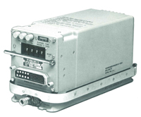
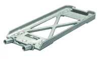
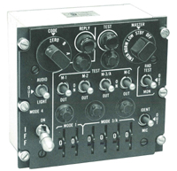
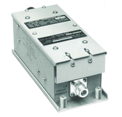

APX-72
Identify Friend or Foe (IFF) Transponder System
The Rex Systems AN/APX-72 Transponder System provides an integrated system for military
and civilian vehicle identification, traffic control and altitude reporting in suitably
equipped aircraft. The system may be installed in fixed or rotary winged aircraft as well
as ships requiring identification. The system operates on mode 1, 2, 3/A, C and 4. System
components are designed for easy interconnection and installation.

Features:
|
The world's most widely used military transponder system
Mark XII IFF performance
DOD AIMS 65-1000 Compliance
Proven design with over 30-thousand installations
Factory service available
|
Specifications:
|
DOD-AIMS-64-326B (MIL-R-81435)
DOD-AIMS-65-1000
MIL-Q-9858A Quality
Meets ISO9001:2008 (quality management system)
STANAG 5017
1 CAO ANNEX 10 A, B, C
US National Standards 1010.51A
J-STD-001 Class 3 soldering techniques employed
|
Accessory Equipment
|
Antenna - Airborne AT-741/APX
Antenna - Shipboard AS-177B/APX
Power Supply - Shipboard PP-6099A/APX-72
Mating Connectors
Interconnect Cable
Extender Cards
Computer KIT-1A/TSEC or equivalent
Mount MT-3948/APX-72 (w/ isolators)
|
Services:
|
Spare parts
Training and logistic support
Mating conductors
Installation materials
Complete spares support
|
System Components
Transponder
The RT859A/APX-72 is the major component of the AN/APX-72 system.
Installed in fixed or rotary winged aircraft or ships, it provides
vehicle identification data, traffic control information and altitude
reporting on properly equipped aircraft.
Upon receiving an interrogation from an external source, the
RT859A/APX-72 decodes and processes the signal, and transmits the
appropriate reply to all AIMS interrogators within range.
Mount
The MT3809/APX-72 die cast mount provides a rigid platform for
transponder mounting allowing easy removal without vehicle altercation.
MT3948/APX-72 is the same mount with vibration isolators installed.

Transponder Control
The C-6280A(P)/APX control allows the operator to select full range
of transponder operating modes, reply codes, identifier pulses, and a
self test. The mode 4 controls allow selection of reply light indicator
or reply light and audio alarm. Indicator lights for mode 4 and self test
are "press to test" types with adjustable intensity. The markings on the
panel are illuminated from behind. thumbwheel and rotary switches are also illuminated.
Installation is with standard aircraft turnlock fasteners.

In-Flight Transponder Test Set
With the growing use of IFF Transponder Systems, it is increasingly important for
pilots to know their IFF system is functioning properly. The TS-1843B/APX Test Set
is designed for permanent installation in aircraft or ships as part of the IFF Transponder System.
The test set is installed between the IFF Antenna and Transponder RT859A/APX-72. It monitors
the performance of the transponder when it is "challenged" by signals from an external
interrogator and causes a "TEST" light to illuminate on control panel C-6280A(P)/APX.

The test set can also generate its own interrogation of the transponder for a "self check"
function when the control panel's "test" button is depressed. The TS-1843B/APX then evaluates
receiver sensitivity, receiver tuned frequency, interrogation decoding, reply frequency, power
and pulse spacing within preset limits as well as antenna line VSWR. If acceptable, the "test"
lamp on control C-6280A(P)/APX will illuminate. Mount MT3513/APX is available for quick installation/removal.